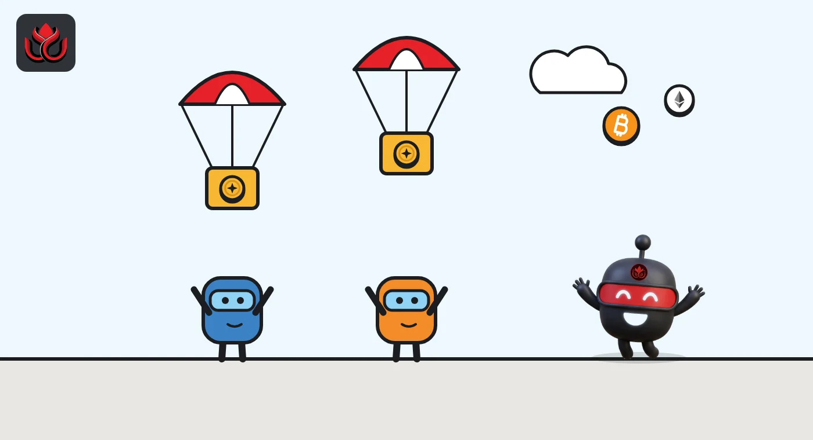
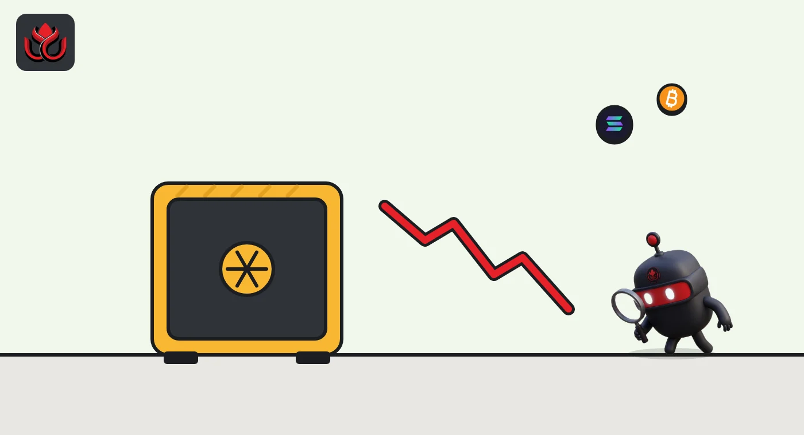

What is a TGE? Token launch day explained, and why most supply stays locked
A TGE, or token generation event, is the moment a crypto project creates its token and the first slice starts to circulate. Airdrop claims and trading usually begin then, while team and investor tokens stay locked for months or years.
Key points
- A TGE is when a project's token is created and first distributed, often alongside an airdrop claim and the first exchange listings.
- Only part of the supply circulates at TGE. Team and investor tokens are usually locked and released later on a vesting schedule.
- A TGE and an exchange listing are separate events. A token can exist before it trades, and a listing can slip.
- Low circulating supply at launch means a large share of tokens can still enter the market later.
What is a TGE?
TGE stands for token generation event. It is the point where a crypto project mints its token on a blockchain and starts handing it out. Before the TGE, the token may be promised in a whitepaper, a points program or a private sale, but it does not exist yet. After the TGE, it is a real asset that can be held, sent and, once listed, traded.
The term is used for almost every new token launch. A TGE usually bundles several things on or around the same day: the airdrop claim for users, the first unlock for public-sale buyers, the first exchange listings and the start of the vesting clock for everyone else.
What happens on TGE day?
A typical launch day looks like this:
- The token is minted. The full supply is usually created at once and split into allocations.
- The first tokens circulate. Airdrop recipients can claim, and public-sale buyers receive any share that unlocks immediately.
- Trading starts. Centralized exchanges list the token and liquidity is added to decentralized exchanges.
- Vesting begins. Locked allocations for the team and investors start their countdown.
These steps do not always happen together. LC Insight reported how Predict.fun finished its PREDICT sale while trading was put on hold with no new date.

Who gets tokens at a TGE?
Every token has an allocation plan, the split of supply between groups. CoinGecko's tokenomics guide says allocation determines who gets tokens after launch, and lists public sale, community, insiders, and foundations and grants. CoinMarketCap describes similar buckets: a public float, team, early investors, ecosystem or treasury, and community incentives.
What matters for launch day is which of those buckets can move. Community airdrops and public sales often unlock fully or partly at TGE. Team and investor shares usually do not. They are released later, which Tokenomist calls unlocks: tokens allocated and locked at token generation that enter circulation over time.
The split varies a lot between projects. CoinGecko's guide notes that Solana, BNB, Celo and Flow allocated more than 40% of their supplies to insiders, while EOS, Cosmos, Ethereum, Cardano and Tezos allocated more than 70% to public sales. A token with a large insider share at TGE will usually have more locked supply waiting to unlock later.
What are vesting, cliffs and circulating supply?
Vesting is the release schedule for locked tokens. CoinMarketCap says a vesting schedule decides when allocated tokens become transferable for investors, team members and advisers. There are two common shapes:
- Cliff. Nothing unlocks for a set period, then a large tranche releases at once.
- Linear. Tokens unlock a little at a time, often daily or monthly.
Circulating supply is the part that is actually on the market. CoinMarketCap's supply rules leave out locked tokens, insider holdings, private-sale tokens and unsold ecosystem reserves. That is why the circulating share at TGE is often small. Tokenomist's FDV guide says about 625 million ARB circulated at launch against a 10 billion maximum, a gap of roughly 16 times.

Why do token prices often fall after a TGE?
There is no rule that prices fall, but launch conditions often push that way. Airdrop recipients got their tokens for free and can sell right away. The circulating supply is small, so the price is set by a thin slice of the market. And everyone can see the locked supply waiting to unlock.
Tokenomist treats a token with less than about 20% of supply circulating as low float, with higher unlock risk. LC Insight has covered both sides: Ritual launched with 82% of its token locked, and Concrete's CT fell 78% in a month after launch.
Tokenomist also warns of stale valuation: because the launch price reflects only the current float, the market may reprice sharply when large tranches unlock.
What happens after the TGE?
The TGE starts a clock that can run for years. Each time a cliff ends or a monthly tranche vests, circulating supply grows. Tokenomist says the market-cap-to-FDV ratio of Sui rose gradually as investor and team tokens passed their cliff periods. Its FDV guide says Optimism's FDV went from about 7 times its market cap at launch toward 3 times as more tokens circulated.
CoinMarketCap's tokenomics guide gives a snapshot of where a mature launch can sit: its table lists Sui with about 4.12 billion of its 10 billion tokens circulating, roughly 41%.
Hyperliquid's HYPE is another example of a long tail. As of November 2, 2026, Tokenomist's HYPE page showed about 23.94% of the 1 billion supply unlocked, with the next release, to Core Contributors, set for November 6, 2026. For anyone reading a new launch, the useful question is not only what happens on TGE day but what the schedule looks like over the next two to four years.
How can you read a TGE announcement?
A careful reading of the official tokenomics page answers most questions:
- What is the total supply, and how much circulates on day one?
- How big are the team and investor shares, and when do their cliffs end?
- Is the airdrop fully unlocked, or does it vest too?
- How long is the claim window, and what happens to unclaimed tokens?
- Which exchanges have confirmed a listing on their own channels?
Fake claim sites spike around launches, so use only links from the project's official site and accounts. Our guide to airdrop scams covers the warning signs.
Expect day-one supply figures to differ between data sites. CoinMarketCap leaves out tokens that cannot be sold on the public market even if they are technically unlocked, so its circulating number can be lower than a project's own. Tokenomist, for its part, treats tokens with more than about 80% of supply circulating as having most of their dilution behind them, which very few new launches can claim.
LC Insight analysis
This section is our reading of the facts above, not a statement of fact.
- The circulating share on day one is the most useful number in any TGE announcement. A small float can make the early price look strong while big unlocks wait in the schedule.
- Launch day stacks the risks: free tokens meet thin liquidity and a wave of fake claim sites. Read the official tokenomics page, not the first hour's price chart.
- A TGE does not guarantee a market. As Predict.fun showed, holders can end up with a token they cannot trade yet, so the listing plan deserves as much attention as the airdrop size.
What's next
- First cliff dates for team and investor tokens after each launch
- Exchange listings confirmed on exchanges' own channels
- How much of each airdrop is sold in the first days
Frequently asked questions
Is a TGE the same as an ICO?
Not quite. An ICO is a token sale to raise money. A TGE is the moment the token is created and distributed, which may follow a sale, an airdrop or both.
Can I buy a token before its TGE?
The token does not exist before its TGE. Some projects run sales that deliver tokens at TGE, often with lockups.
Does a TGE mean the token is listed on exchanges?
Not always. Listings are decided by each exchange and can come later or be postponed, as happened with Predict.fun's PREDICT.
What is the circulating supply at TGE?
It is the share that can actually trade on launch day. It excludes locked team, investor and treasury tokens, so it is often a small part of total supply.
Disclaimer. This article is based on public information and the sources listed below as of the update time shown. It is for information only and is not investment, legal or tax advice. Figures may change as companies and authorities publish new data.